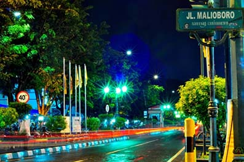
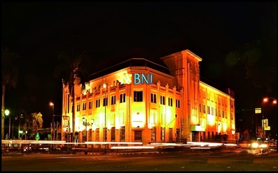

Wisata Jogja
Daerah Istimewa Yogyakarta (DIY) atau biasa disebut kota Jogja terletak tengah - selatan pulau jawa. Disini terdapat tempat - tempat wisata yang pasti bisa membuat kita sejenak melupakan rutinitas pekerjaan kita. Keindahan Jogja memang tiada duanya, disini kita bisa berwisata sambil belajar tentang peninggalan leluhur kita, selain itu banyak pula tempat - tempat wisata yang bisa menguji adrenalin kita, seperti berayun di puncak bukit menoreh, mengarungi sungai di kali suci ataupun berseluncur di Jogja bay. Bagi anda yang mencari wisata pesisir, pantai - pantai di Jogja juga tidak kalah cantik dibandingkan dengan pantai - pantai lain di Indonesia, perpaduan pantai yang berhadapan langsung dengan bukit - bukit memanjakan mata kita untuk bisa melihat keindahan alam yang sesungguhnya. Untuk pecinta belanja dan kuliner, Jogja adalah tempat yang tepat buat anda, ada malioboro yang siap menyediakan oleh - oleh untuk keluarga yang ada dirumah, ada gudeg jogja yang siap menggoyang lidah anda dengan cita rasa khasnya, adapula warung angkringan yang bisa menjadi tempat ngopi kita dimalam hari sambil menikmati Jogja di malam hari. Masih banyak lagi pesona lain dari kota Jogja, jangan takut ke Jogja dan jangan ragu untuk memakai jasa ABg Trans.
Jalan - Jalan ke Jogja, ABg Trans Aja !!!
Tempat - Tempat Wisata Jogja
Berikut ini kami berikan beberapa rekomendasi tempat - tempat yang bisa anda kunjungi pada saat anda berlibur ke Jogja
 Alamat : Borobudur, Magelang, Jawa Tengah, Indonesia
Alamat : Borobudur, Magelang, Jawa Tengah, Indonesia
Malioboro adalah nama salah satu kawasan jalan dari tiga jalan di Kota Yogyakarta yang membentang dari Tugu Yogyakarta hingga ke perempatan Kantor Pos Yogyakarta.
Lokasi ini berada pada titik pusat daerah pariwisata Daerah Istimewa Yogyakarta. Dilokasi ini terdapat Gedung Agung, Benteng Vredeburg, Kantor Pos Besar dan Gedung BNI, di kawasan ini juga terdapat Monumen Serangan Oemoem 1 Maret serta Monumen Batik.
 Alamat : Desa Ngestirejo, Kec. Tanjungsari, Kab. Gunungkidul, Daerah Istimewa Yogyakarta
Alamat : Desa Ngestirejo, Kec. Tanjungsari, Kab. Gunungkidul, Daerah Istimewa Yogyakarta
Hubungi :
Telp. : 0856-4162-6783 | 0812-2661-2355
WA : 0877-3825-1191 | 0858-7624-4840
BBM : 553db3e7 | D0DE903F
IG : @abg_trans
Line : sewamotordijogja
FB : Rental Motor Jogja AB'Gtrans